Macroscale inference of multitrophic community assembly under climate change
Why to infer macro-assembly processes under climate change?
To anticipate risks to biodiversity, ecosystem functioning, and human well-being
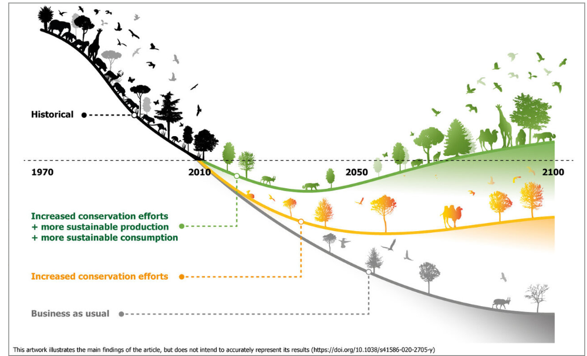
Climate change as a driver of ecological assembly regimes
Climate change reshapes the conditions under which ecological communities form and persist
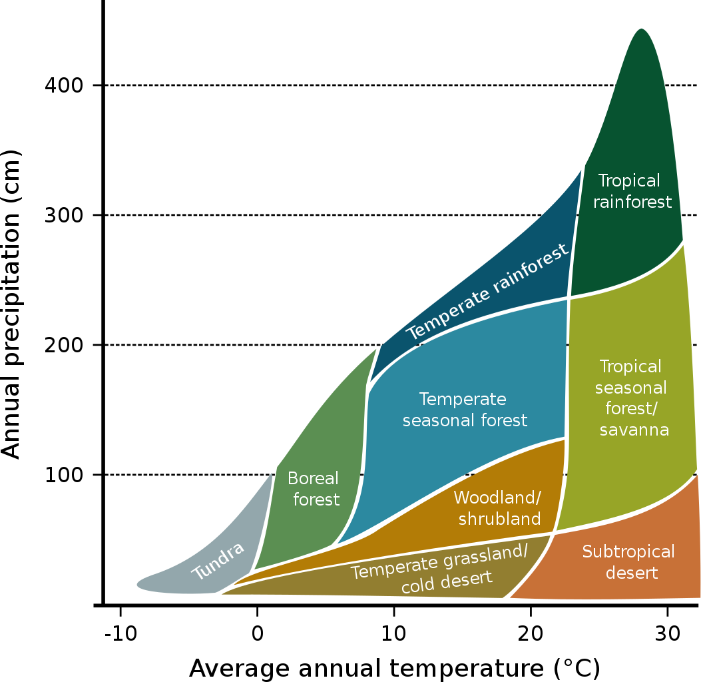
Ecological communities reflect filtering and colonization across climate gradients
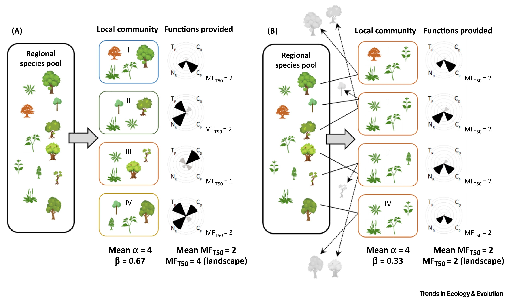
Climate change modifies not just where species can live, but which combinations of traits and interactions are feasible
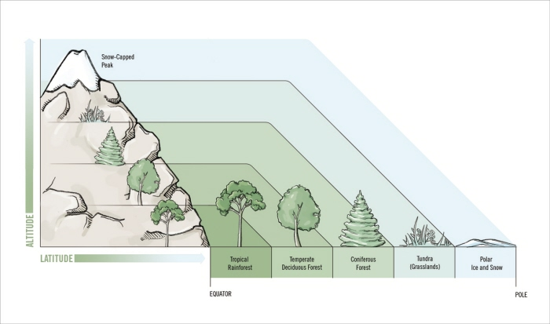
Climate change restructures macroevolutionary and biogeographic trajectories
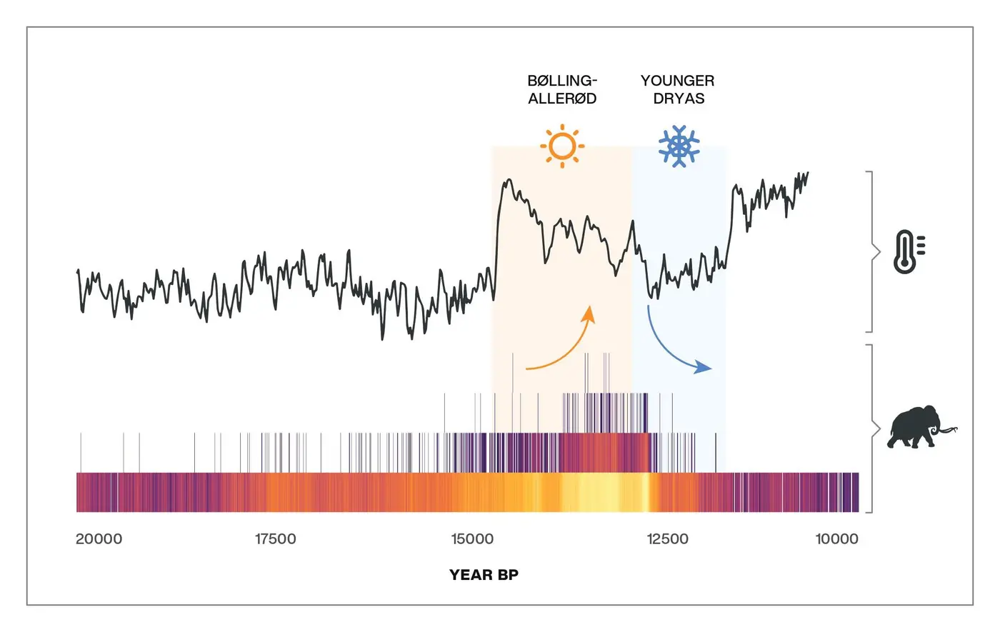
© Hans Sell & Christopher W. Carlton
Challenges to advance the inference of community assembly processes at macroscales
1) Bridging research developed in conceptual silos
Single trophic levels
Correlations with species counts (i.e. alpha diversity)
Local studies
Space
Time
2) Bridging theory, data, and scale
Research remains in the theoretical domain, simulations of reality are simplifications
Experimental researchers have it hard to scale and control complexity
Synthetic datasets (i.e. aggregated observations) represent shared effort & knowledge however,
Computational methods are available but not integrated (e.g. OS packages)
Species occurrences, traits, and interaction datasets are now digitally available, yet they are not integrated with data on climate, particularly at planetary scales.
3) Going beyond contemporary climate gradients
Life in Earth goes beyond the Holocene
Climate gradients are dynamic
Climate effects emphasize spatial gradients of change rather than temporal trends, even less in deep time trends.
Chapter Overview
Chapter 1: Inferring network assembly mechanisms
Chapter 2: Climate-driven functional asymmetry and network structure
Chapter 3: Deep-time climate dynamics and biodiversity assembly
Chapter 1: Trait-based inference of ecological network assembly
Does assembly processes generate emergent network structure?
Simulating network assembly
Inferring assembly processes using trait-based null models
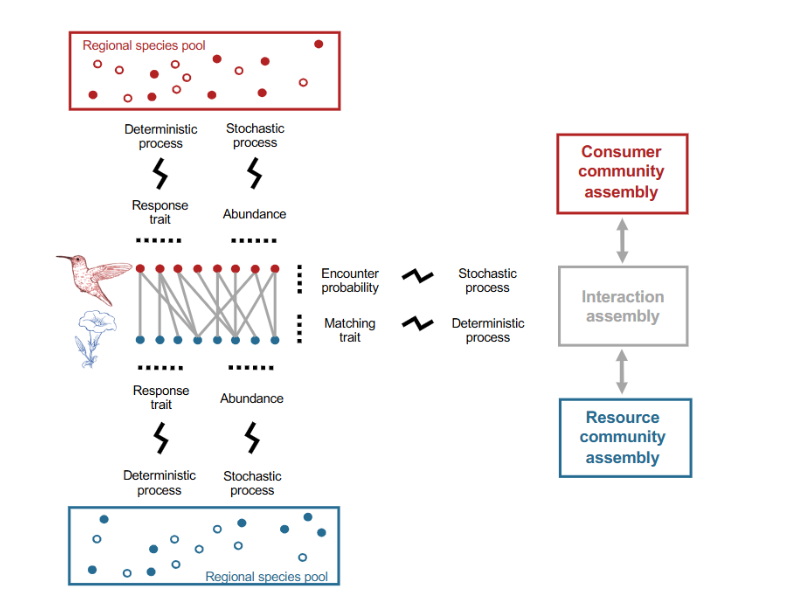
Chapter 1: Simulating network assembly
- Individual-based, spatially implicit assembly models
- Reference-pool species vary in abundance and trait values
- Immigration is trait-filtered
- Established lineages diversify via neutral stochastic drift
- Reference-pool species vary in abundance and trait values
- Community assembly
SEF: environmental filtering
ND: neutral dynamics
- Interaction assembly
MM: morphological matching
FL: forbidden links
NL: stochastic interactions (abundance)
- Calculate NODF and Q
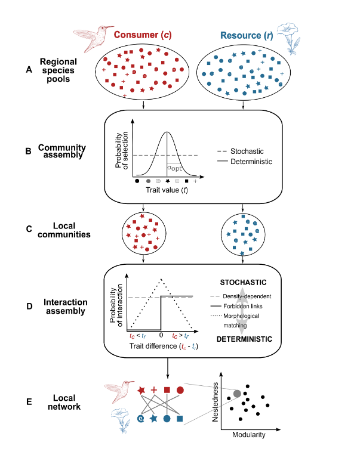
Chapter 1: Simulating network assembly
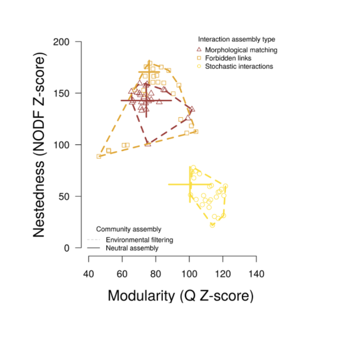
Chapter 1: Inferring network assembly | Case study
Elevational gradient in the Andes of Ecuador
100 m of elevation change ~ 100% plant community turnover
Well preserved Andean slopes
large native forest patches
indigenous plant + animal communities
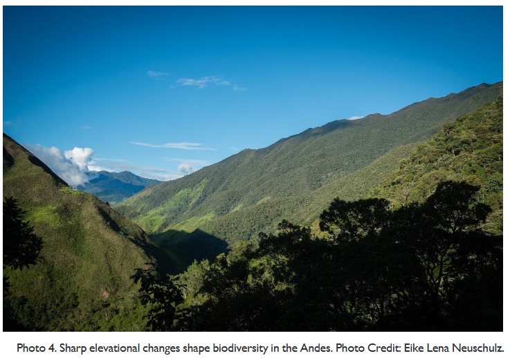
Chapter 1: Inferring network assembly
Species level frugivore bird - plant interaction networks in replicated sites across the gradient
Field observations, expert species id.
Which assembly process can we infer from the variation in network metrics along the climatic gradient?
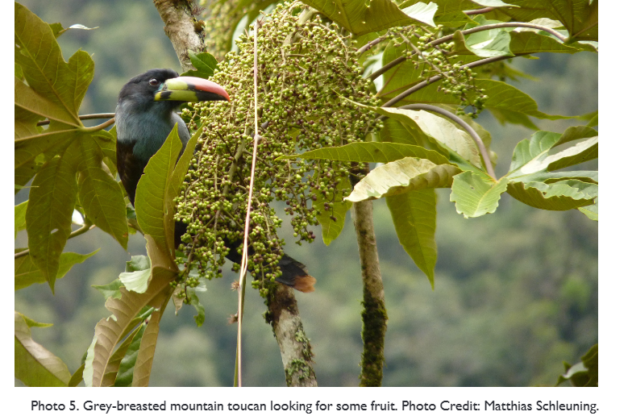
Chapter 1: Inferring network assembly | Process-based species pool delineation
Climate resistance layer from WorldClim (Slope + Temp + Prec + Elev)
Least cost path distances
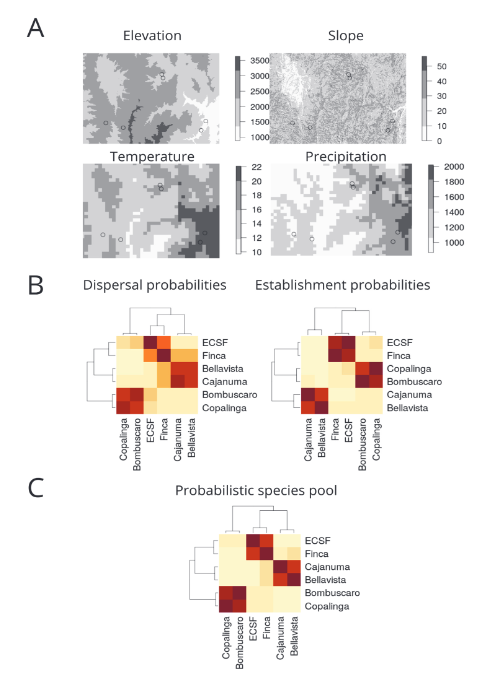
Chapter 1: Inferring network assembly | Quantify trait matching
Correspondence analyses on interactions
PCA on plant/animal trait matrices
RLQ ordination to link plant traits - interactions - animal traits
significance with fourthcorner analyses.
RLQ axes as trait axis for environmental filtering and interaction assembly analyses
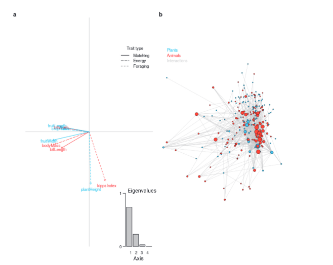
Chapter 1: Inferring network assembly | Relative influence of assembly processes
Generate null networks per site randomizing:
Interactions only (plants + animals fixed)
Consumers + interactions
Resources + interactions
Consumers + resources + interactions
Partition effects
Interaction effect
Resource effect
Consumer effect
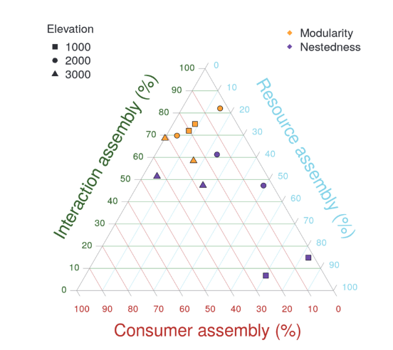
Chapter 2: Distinct functional responses of consumers and their producers to climate drive mutualistic network assembly
Chapter 2: Conceptual framework
Latent trait exist along the gradient
How does asymmetry in FR vary across large-scale climatic gradients?
Does functional asymmetry constrain network structure?
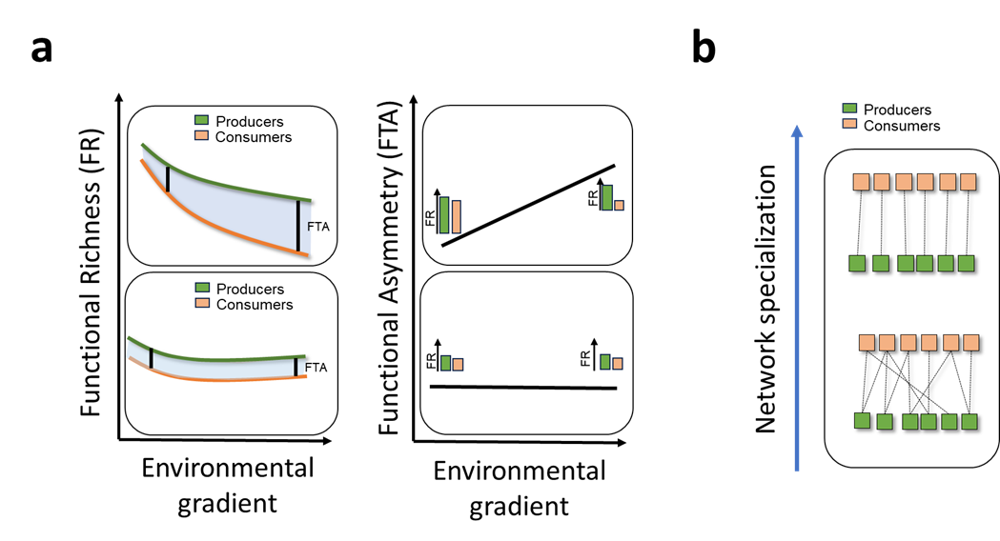
Chapter 2: Downscaling aggregated meta-networks
- Digitally available data on:
- Palms
- Mammal frugivores
- Museum records
- Scientific literature
- Range maps
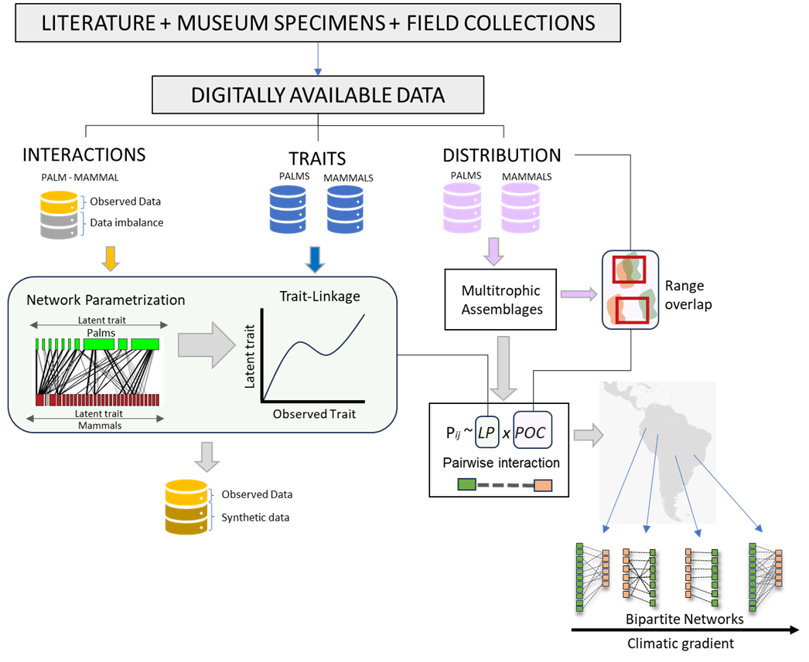
Chapter 2: Network parametrization
Which model best infer interaction probability from binary interaction data?
SBM: Stochastic block model
MCM: Matching centrality model
CM: Connectance model
TMM: Trait matching model
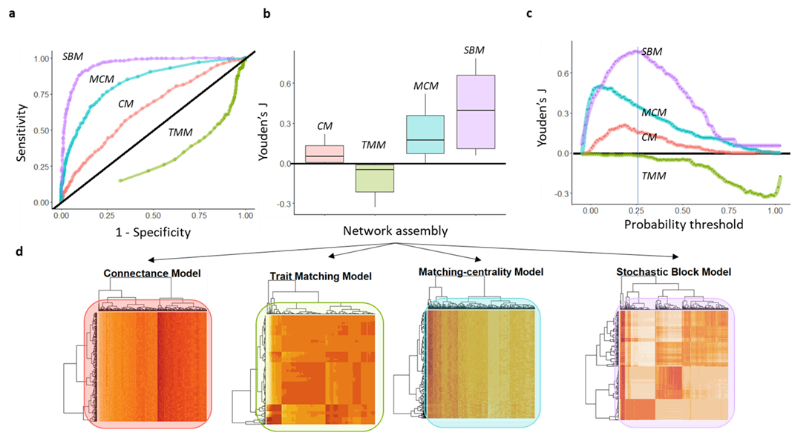
Chapter 2: Trait-linkage
- Delineating <<interaction guilds>> with trait data
- Useful to predict interactions that are not observed
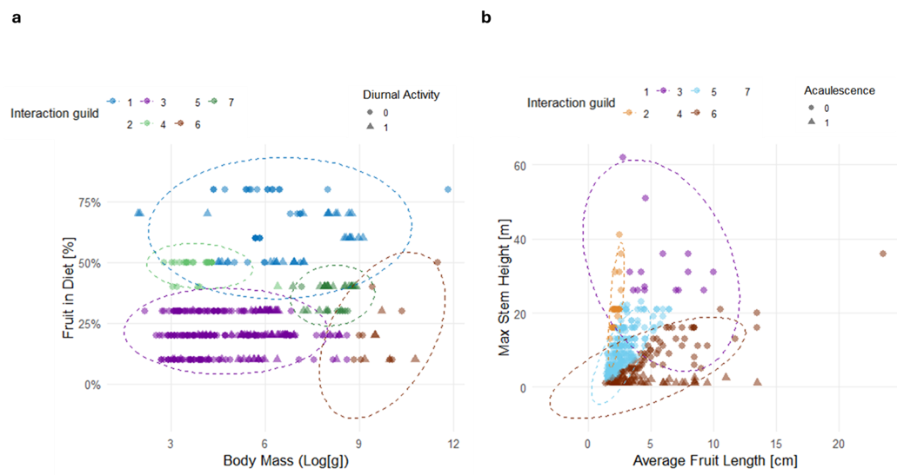
Chapter 2: Effects of climate change in functional richness vary between palms and mammals, and generate functional trophic asymmetry
- Filtering strength varies across interaction guilds
- Asymmetry dynamics vary across interaction guilds
- Interaction guild-specific responses of asymmetry to climate gradient
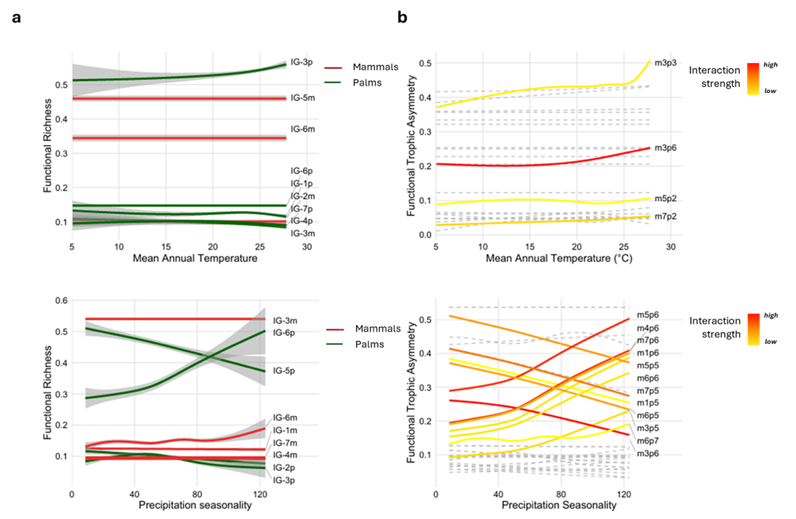
Chapter 2: Effects of climate in FTA correlate with changes in network structure
- Positive relationship with H2’ - specialization
- Low specialization overall
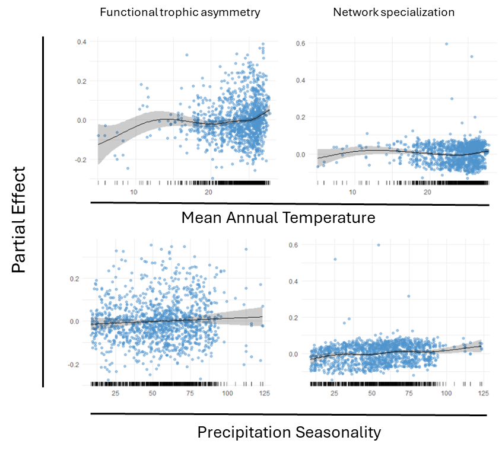
- Stronger positive relationship of FTA with Spectral radius ~ Nestedness
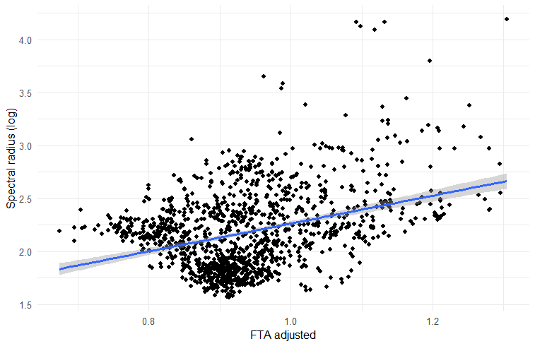
Chapter 3: Climate change and the deep-time assembly of biodiversity
Why biodiversity and climate change in deep time
- Assembly inference is often limited to contemporary climate gradients
- Climate history structures species pools
- Historical climate context is underrepresented in contemporary assembly processes
- Variation in rates of change
- Variation in climatic instability
- Variation in rates of change
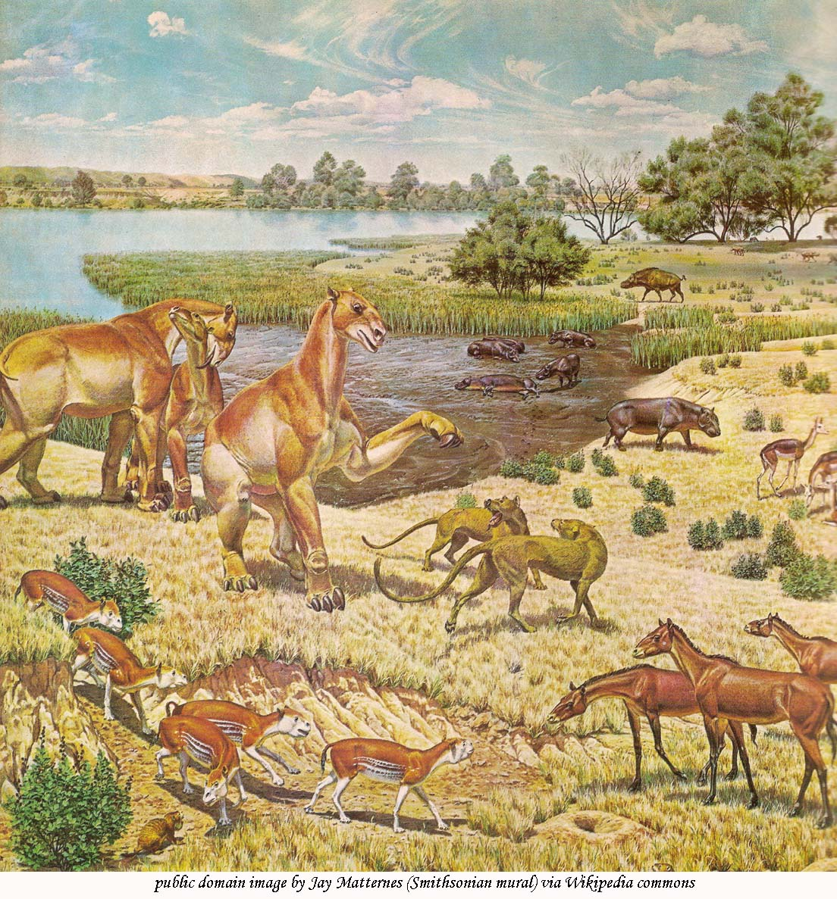
Chapter 3: Conceptual framework
- How do rates and instability of climate change influence taxonomic turnover across deep time?
- Are responses to climate change consistent across continents and trophic guilds?
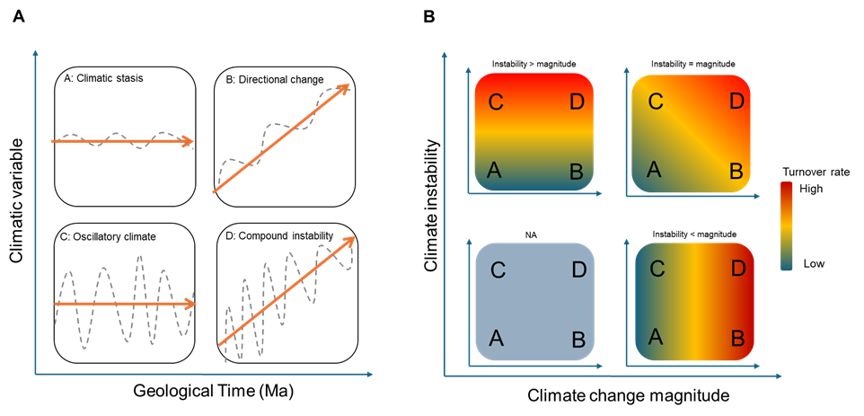
Chapter 3: Deep-time climate dynamics across the Neogene
- Digitally available paleoatmospheric temperature reconstructions
(Hagen et al., 2019)- Fossil plant ranges
- Köppen zones
- Orogenesis models
- GAM-based feature engineering to derive historical change metrics
- Raster layer time series
- 23Ma - 2Ma
- 1Ma resolution

Chapter 3: Fossil genus turnover across deep time
Large mammal fossil spatiotemporal data from NOW database
North America
Europe
100 KM fossil assemblages - 1 Ma
\(\beta_{sim}\) : Simpson component of species dissimilarity (Turnover)
Chapter 3: Modelling the effects of climate in fossil turnover
Generalized dissimilarity modelling (GDM)
Richness of fossil assemblages used as model weights
Explained deviance against a null model (permuting predictors but retaining spatial structure)
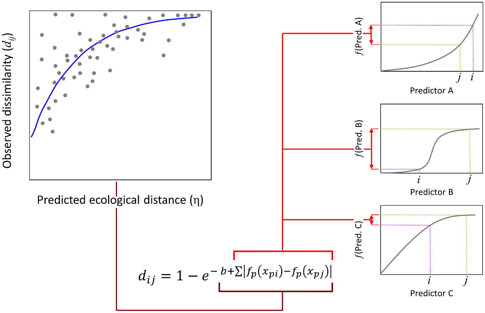
\(\log(\beta_{sim}) = \beta_0 + \beta_1 \Delta \text{TempChange} + \beta_2 \Delta \text{TempInst} + \beta_3 \Delta \text{MeanTemp} + \beta_4 \Delta \text{Space} + \beta_5 \Delta \text{Time} + \epsilon\)
Chapter 3: Spatial and temporal drivers of mammal assembly across the Neogene
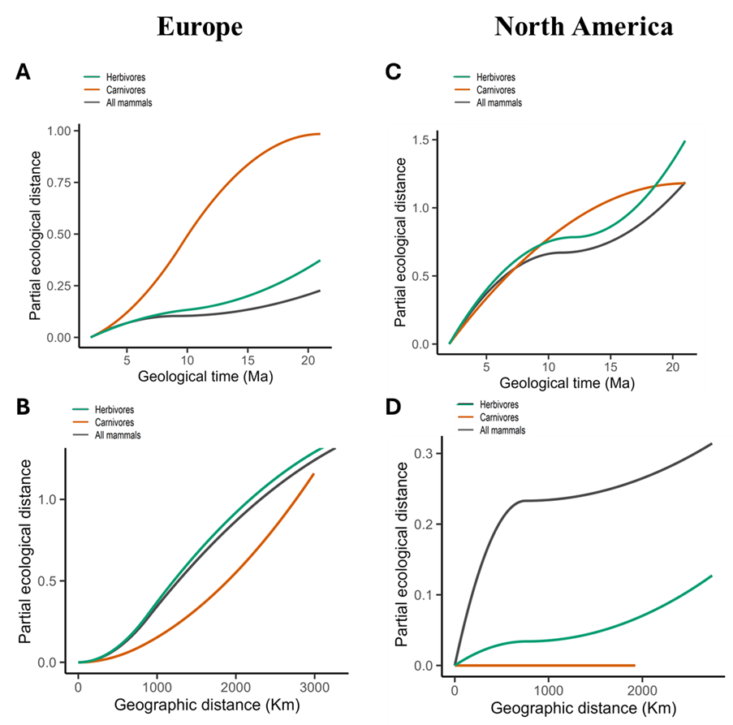
Chapter 3: Climate drivers of mammal assembly across the Neogene
Magnitude & direction of climate change the strongest predictor of fossil change
Global cooling slows down in North America coincides with increased fossil herbivore turnover
Increased turnover of carnivores in more tropical areas of North America and with climate warming in Europe
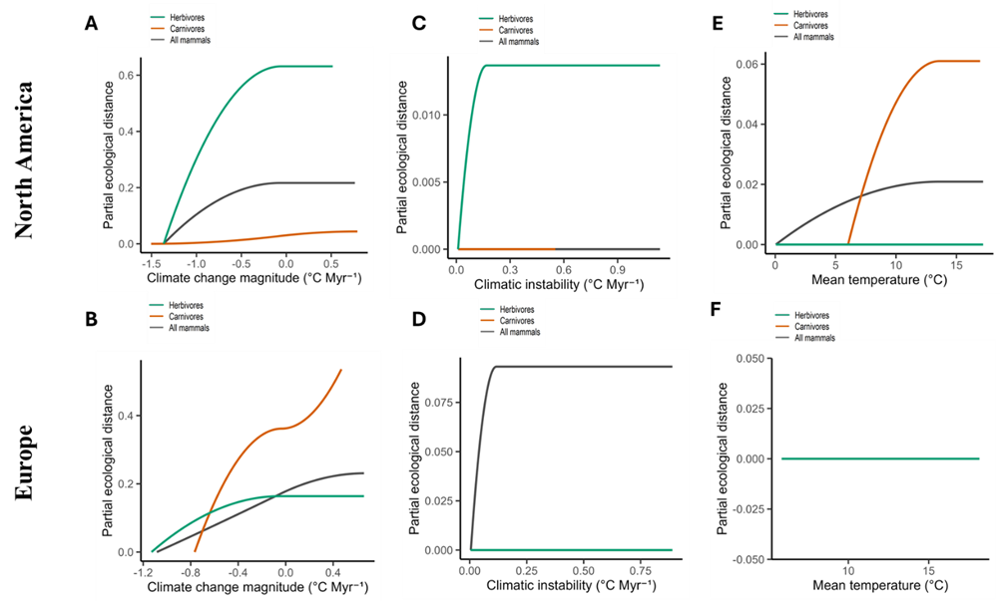
Synthesis and Implications
Synthesis:
Chapter 1: Networks are structured via trait-based environmental filtering with cascading bottom-up and top-down effects on the assembly of species interactions.
Chapter 2: Large-scale climate gradients filter consumers and resources with distinct strengths, generating functional asymmetry and modifying network structure
Chapter 3: Stronger turnover rates found in warming events within a long-term cooling trend, but turnover rates differs between trophic guild.
Implications
Network architecture is not locally driven, rather is climate and historically conditioned
Community assembly respond to directional climatic transitions
- Hierarchical processes operating in tandem
Shift in assembly concept
Static climatic envelopes —> Transient dynamics
Niche-neutral dicotomy –> Relative influence of assembly processes
Climate change effects are not uniform across trophic levels
Effects can cascade to other trophic levels, based on interaction assembly rules
Computational tools to measure this effects
Deep time evidence of: Rapid directional shifts destabilize assembly more than background drift
- Current anthropogenic warming may trigger disproportionately strong reorganization.
What’s next?
Develop a predictive framework for how ecosystems reorganize under global change
Test assembly processes in networks in disturbed and novel ecosystems
Rewilding and restoration sites
Urban and agroecosystems
Invasion fronts
Develop Indicators for Planetary scale Biodiversity Monitoring
- Use Null Models / FTA and FTA–H2′ as structural indicators of
change
- Generalize pipelines for monitoring programs (e.g.
biosurveillance)
- Make tools available to the public (geoBON)